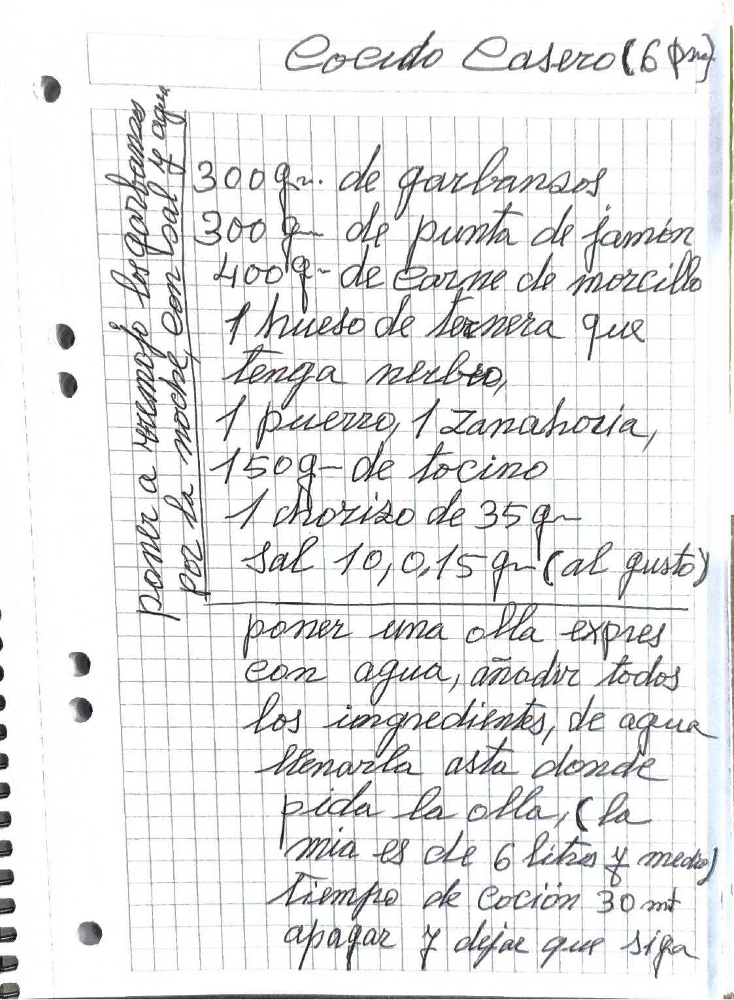
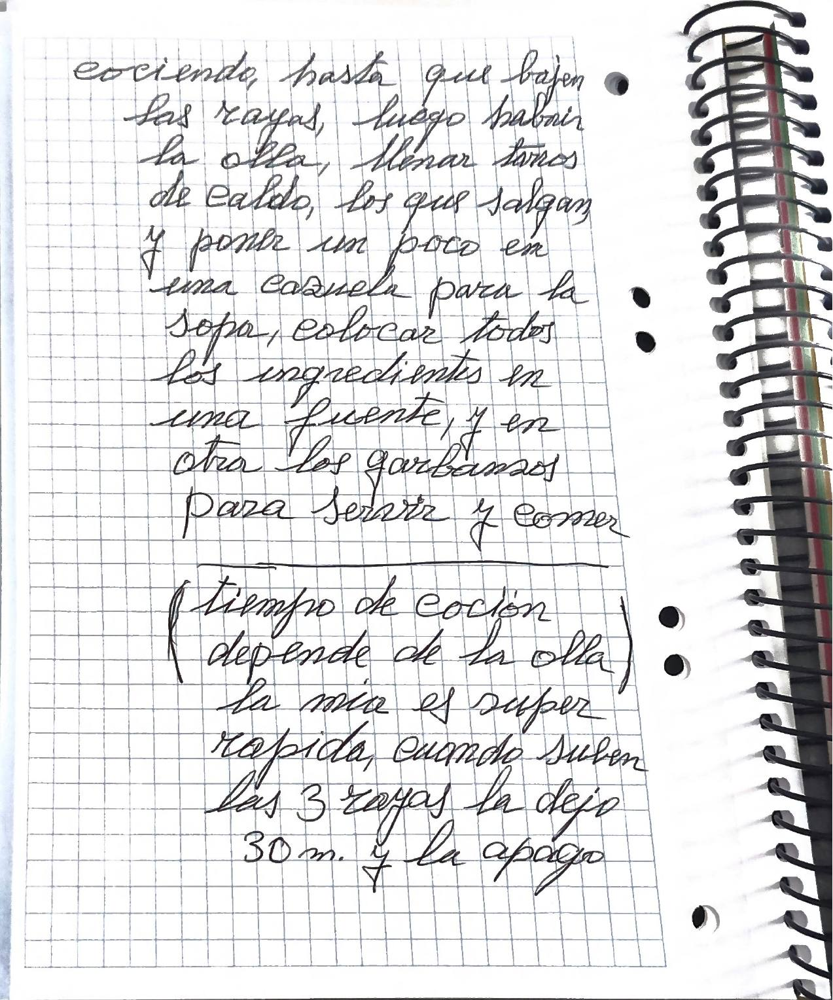
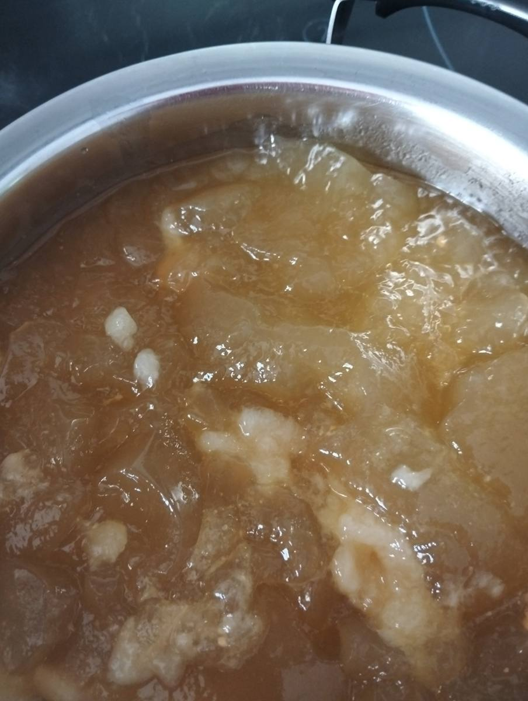
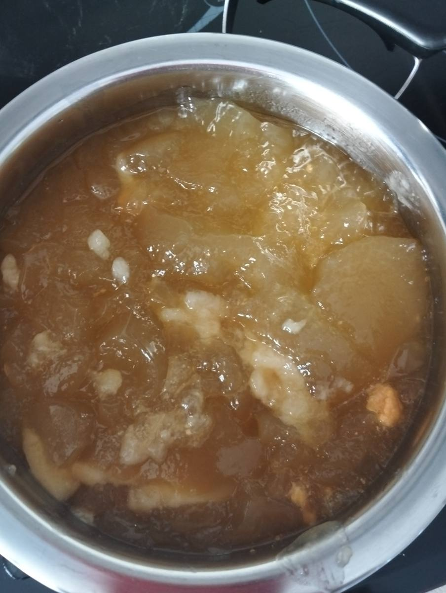
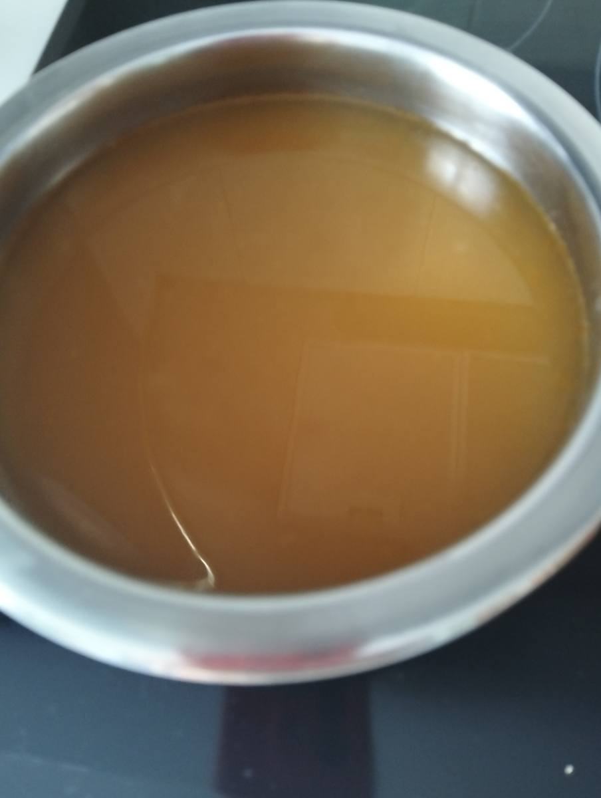
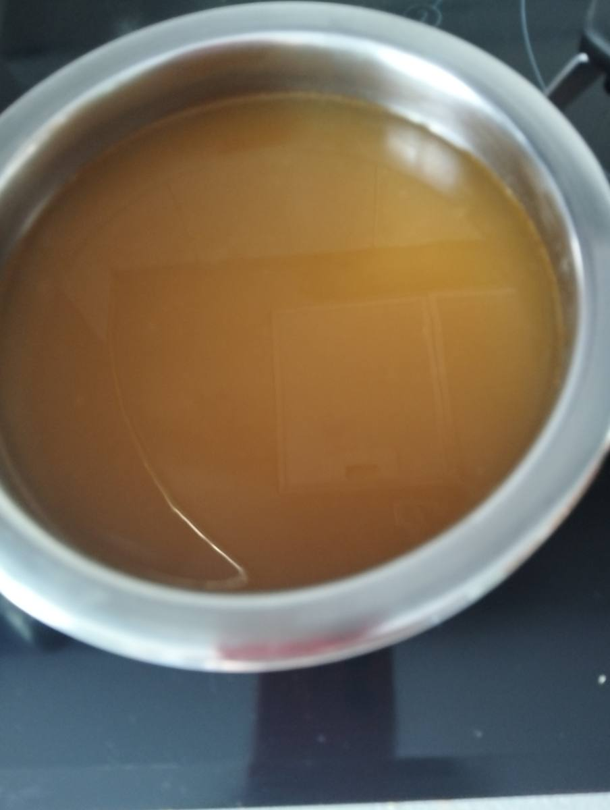

Cocido casero

Versión editada para cocinar. Lo que ella escribió, palabra por palabra, está en «Cuaderno».
Ingredientes
Preparación
- La noche antes, poner a remojo los garbanzos con sal y agua.
- Poner una olla exprés con agua y añadir todos los ingredientes. De agua, llenarla hasta donde pida la olla.
- Tiempo de cocción: 30 minutos. Apagar y dejar que siga cociendo hasta que bajen las rayas.
- Luego abrir la olla. Llenar tarros de caldo, los que salgan, y poner un poco en una cazuela para la sopa.
- Colocar todos los ingredientes en una fuente, y en otra los garbanzos, para servir y comer.
Notas de mamá
«La mía es de 6 litros y medio.»
«El tiempo de cocción depende de la olla. La mía es súper rápida: cuando suben las 3 rayas la dejo 30 minutos y la apago.»
Avisos y dudas
- La sopa solo se menciona («un poco en una cazuela para la sopa»); no hay receta de la sopa en el manuscrito. La carpeta «sopa de cocido» tiene fotos.
- Lo que sobra del cocido es la base de las Croquetas de cocido.
Tal como lo escribió


Transcripción fiel, con su ortografía. Lo que va entre corchetes son aclaraciones de la transcripción.
Cocido Casero (6 per.)
300 gr. de garbanzos 300 gr. de punta de jamón 400 gr. de carne de morcillo 1 hueso de ternera que tenga nerbio, 1 puerro, 1 Zanahoria, 150 gr. de tocino 1 chorizo de 35 gr. Sal 10, o 15 gr. (al gusto)
poner una olla expres con agua, añadir todos los ingredientes, de agua llenarla asta donde pida la olla, (la mia es de 6 litros y medio) Tiempo de coción 30 mt apagar y dejar que siga cociendo, hasta que bajen las rayas, luego habrir la olla, llenar tarros de caldo, los que salgan y poner un poco en una cazuela para la sopa, colocar todos los ingredientes en una fuente, y en otra los garbanzos para servir y comer
(tiempo de cocción depende de la olla) la mia es super rapida, cuando suben las 3 rayas la dejo 30 m. y la apago
poner a remojo los garbanzos por la noche, con sal y agua
En la cocina



